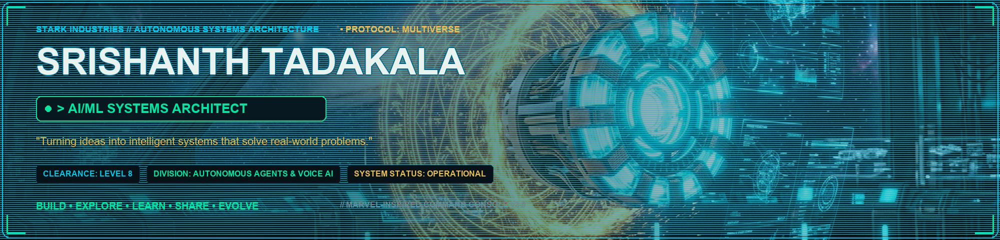
|
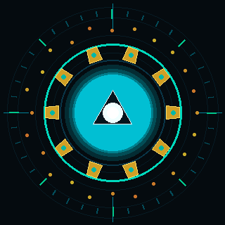 ⚡ ARC REACTOR // PALLADIUM CORE ACTIVE
|
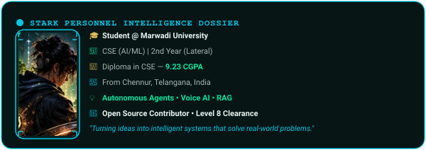 |
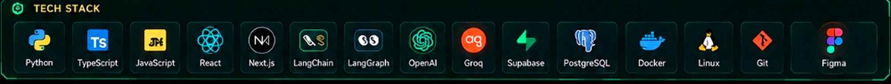
🌌 PROJECT MULTIVERSE // TACTICAL ARCHIVES |
VIEW ALL TACTICAL REPOSITORIES ↗
|
|
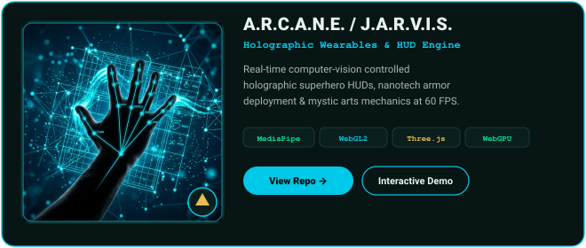 |
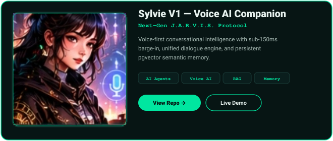 |
|
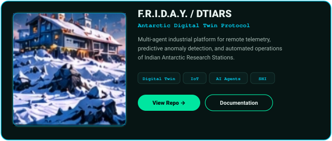 |
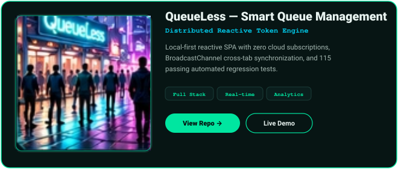 |
|
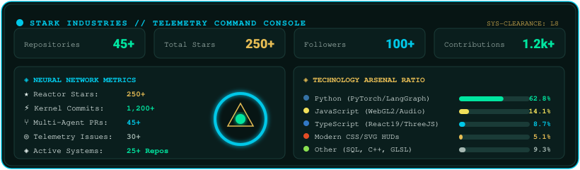 |
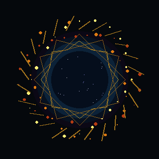 🌀 MULTIVERSE PORTAL // EVENT HORIZON CALIBRATED
|
|
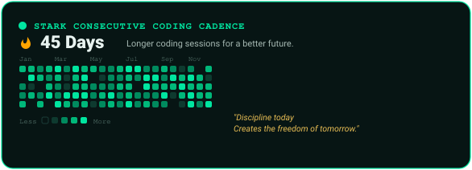 |
|
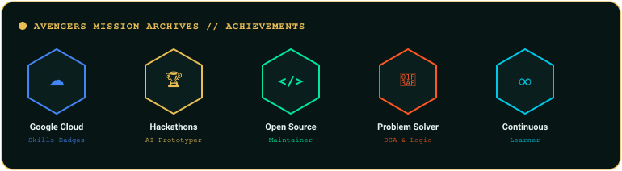 |
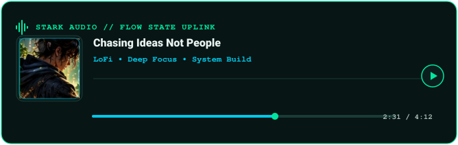 |
📂 Module 02 — Developer Intelligence Dossier
"Turning ideas into intelligent systems that solve real-world problems."``
[ STARK INDUSTRIES PERSONNEL DOSSIER ]
OPERATIVE: Srishanth Tadakala
CODENAME: Siddu
DIVISION: Autonomous AI Systems & Real-Time Human-Machine Interaction
SECURITY CLEARANCE: Level 8 [Avengers Initiative Protocol]
SYSTEM STATUS: Active Operative // Flow State Engaged
`
🎓 Academic Credentials & Origin
- Bachelor of Technology (BTech) in Computer Science & Engineering (AI/ML)
Marwadi University, Rajkot • Second-Year Lateral-Entry Scholar
- Diploma in Computer Science and Engineering
Mother Theresa College of Engineering and Technology • CGPA: 9.23
- Origins: Chennur, Telangana, India.
🔬 Tactical Specialization & Focus Areas
- Autonomous Multi-Agent Architectures: Engineering resilient agent networks with LangGraph, hierarchical goal planners, actor-critic reflection, and dynamic sandboxed tool execution.
- Sub-150ms Real-Time Voice Intelligence: Sub-150ms voice conversational loops combining Silero Voice Activity Detection (VAD), streaming Groq Whisper STT, and bi-directional WebSocket audio pipelines.
- Production Retrieval-Augmented Generation (RAG): Enterprise-scale semantic search, hybrid sparse/dense vector indexing, reciprocal rank fusion, and PostgreSQL
pgvector memory systems.
Spatial Computing & Computer Vision Wearables: Real-time 60 FPS hand gesture spatial manipulation via MediaPipe Holistic and WebGL2 / Three.js.
⚙️ Module 03 — Technology Arsenal
Arsenal Category
Tactical Technologies & Weapons
Core Languages
Python 3.12+ TypeScript JavaScript (ES6+) C/C++ SQL Bash
Neural & Agentic AI
LangChain LangGraph Groq LPU OpenAI API Whisper pgvector MediaPipe PyTorch Hugging Face
Holographic HUD & Spatial UI
Three.js WebGL2 WebGPU React 19 Next.js 15 Tailwind CSS Vite Web Audio API
Reactor Core & Backend
FastAPI Node.js PostgreSQL Supabase Redis BroadcastChannel API Docker
Mission Control & DevOps
Linux Kernel Git GitHub Actions CI/CD Pipelines Vitest Playwright Figma
🚀 Module 04 — Project Multiverse Showcase
1. A.R.C.A.N.E. / J.A.R.V.I.S. Gesture Engine
github.com/Srishanth-Tadakala/Iron-Man-Gestures
Key Capabilities:
Real-time computer vision-controlled superhero HUDs, nanotech armor deployment, and Doctor Strange mystical particle mechanics.
Zero-allocation memory pool maintaining a locked 60 FPS framerate.
Stack: MediaPipe Holistic, WebGL2, Three.js, WebGPU, Electron.
2. Sylvie V1 — Autonomous Voice-First AI Companion
github.com/Srishanth-Tadakala/Sylvie
Key Capabilities:
Sub-150ms Barge-In: Client-side Voice Activity Detection (VAD) coupled with ring-buffer playback cancellation.
Unified Intelligence Core: Single reasoning engine powering streaming text (SSE) and voice (WebSocket).
Selective Memory Subsystem: Fact, preference, and decision extraction with pgvector semantic retrieval.
Stack: Python 3.12, FastAPI, LangGraph, Groq LPU, pgvector, Web Audio API.
📐 View Sylvie Sequence Architecture Diagram
`
[ User Voice ] ──► [ Audio RingBuffer ] ──► [ Silero VAD (Sub-150ms) ]
│
(Speech Detected? Cancel Current Playback)
▼
[ Groq Whisper STT ] ──► [ LangGraph Multi-Agent Router ] ──► [ pgvector Memory ]
│
(Contextual RAG Retrieval)
▼
[ Groq Llama-3 70B Engine ]
│
(Audio Stream)
▼
[ Kokoro/ElevenLabs TTS ] ──► [ User Headset ]
`
3. F.R.I.D.A.Y. / DTIARS — Digital Twin for Antarctic Research Stations
github.com/Srishanth-Tadakala
Key Capabilities:
Autonomous multi-agent platform for harsh environmental monitoring and operational automation of Indian Antarctic Research Stations.
Real-time sensor synchronization, thermal anomaly detection, and predictive structural health telemetry.
Stack: AI Agents, IoT Protocols, Distributed State Machine, Time-Series Analytics.
4. QueueLess — Smart Queue Management System
github.com/Srishanth-Tadakala/QueueLess-
Key Capabilities:
Zero-Cloud Persistence: Operates completely within browser runtimes without cloud dependencies, leveraging localStorage and BroadcastChannel for multi-tab synchronization.
Adaptive Rolling Average: Dynamic algorithmic estimation engine providing real-time waiting estimates based on transaction velocity.
Automated Verification: Engineered with 115 comprehensive automated regression tests (100% passing).
Stack: Vanilla ES6+, BroadcastChannel API, LocalStorage Engine, Vitest.
🔬 Additional Engineering Initiatives in the Multiverse
- A.E.R.I.S.: Real-time computer-vision spatial interaction platform for 3D turbomachinery utilizing Three.js and MediaPipe hand tracking.
- OmniAction AI: Spatio-temporal human behavior and multi-object tracking platform supporting 15-class human action recognition.
- APEX / Ta-Da: Interactive creative engineering portfolio featuring synthesized spatial audio and dynamic island navigation.
📊 Module 05 — GitHub Command Center
⚡ Core Repository Metrics
- Total Repositories: 45+ projects
- Total Stars: 250+ across public tools and libraries
- Global Followers: 100+ developers
- Annual Contributions: 1,200+ commits and PRs
🛠️ Language Distribution
- Python (62.8%): PyTorch, FastAPI, LangChain, OpenCV, NumPy
- JavaScript (14.1%): Node.js, Web Audio API, Canvas, BroadcastChannel
- TypeScript (8.7%): React 19, Next.js, Three.js, Strict Typings
- HTML/CSS (5.1%): Modern Custom Properties, SVG, Responsive Glassmorphism
- Other (9.3%): SQL, Shell scripting, Docker, GLSL Shaders
🔥 Streak & Coding Activity
- Current Consecutive Streak:
45+ Days`
📡 Expand Live Dynamic Telemetry Feeds
🏆 Module 06 — Achievement Archives (Avengers Mission Records)
- 🏅 Google Cloud Skills Boost: Verified milestones in generative AI, cloud infrastructure, and model deployment pipelines.
- 🏆 Hackathons & Prototyping: Active competitor in engineering hackathons with focus on real-time AI companions and distributed web architectures.
- 🌐 Open Source Contributor: Maintainer and creator of open-source computer vision, queue management, and portfolio systems.
- 🎯 Algorithmic Problem Solving: Persistent practice across data structures, graph traversal, and dynamic programming.
- ♾️ Continuous Learner: Dedicated daily exploration of emerging LLM agent frameworks and multimodal inference engines.
📬 Module 07 — Communication Interface (Stark Comms Uplink)
Engineered for Srishanth Tadakala • Inspired by Marvel Cinematic Universe, Stark Industries & Doctor Strange